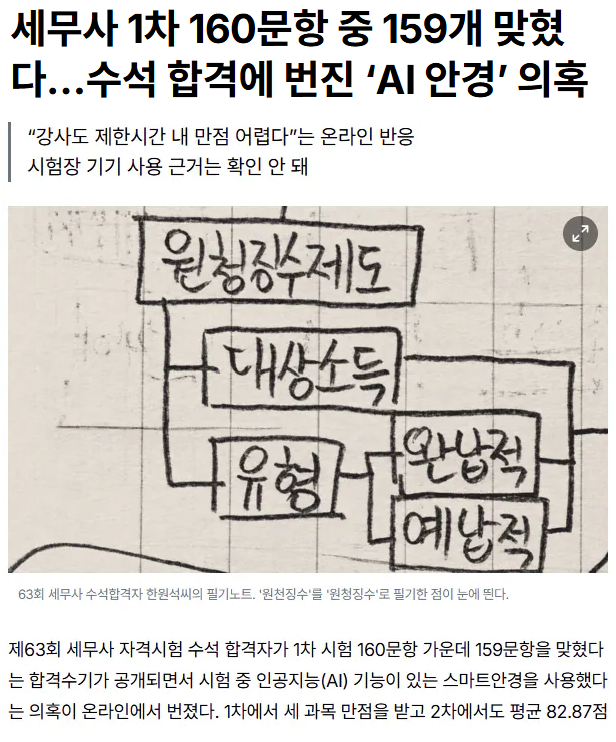

기사에서 수석합격자 터는 법 공개함 ㅋㅋ
1. 한원석씨 ai계정 당시 채팅내역 조사
2. 한원석씨 2차시험 단어 단위로 재채점하면 '원청징수'같은거 다 감점시켜서 떨어뜨릴 수도 있을듯
기사 링크 https://www.tudi.co.kr/news/articleView.html?idxno=503

기사에서 수석합격자 터는 법 공개함 ㅋㅋ
1. 한원석씨 ai계정 당시 채팅내역 조사
2. 한원석씨 2차시험 단어 단위로 재채점하면 '원청징수'같은거 다 감점시켜서 떨어뜨릴 수도 있을듯
기사 링크 https://www.tudi.co.kr/news/articleView.html?idxno=503
근데 AI 사용 내역을 공개하려고 할까
시험시간대 사용내역만 공개하면 되지 않을까?
원래는 사용이 불가능한 시간이잖아
경찰이 아닌이상 공개할 의무가 없는거 아님? 사용내역이야 지우면 그만 아닌가
나도 뭐 그런건 모르겠음. 어떤 AI, 어떤계정 썼는지도 모르는데 수사도 뭐 어찌할까 싶지만은
다만 ai랑 계정만 특정된다면 사용이력 공개만 해도 어느정도 유효한 근거 아닐까 싶어서
공개되면 확실한 건 맞긴한데, 저 사람한테 단순 의심 정황만으로 채팅 내역을 보여달라고 하면 절대로 안 보여주겠지.
그렇다고 기업한테 공개해달라고 요청해도 들어줄 리가 없고
경찰도 명백한 증거가 있어야 수사가능함. Ai 썻다는 목격자가 있다던가 감독관이나 cctv 기록상 이상한게 있다던가. 그냥 답안지가 의심된다고 수사할 수 없으니 아마 그냥 넘어갈듯. 다음 시험 치는 애들이 문제지.
뉴스도 탔고, 수능 같은 큰 시험 앞두고 말 많이 나오는 중이라 시범 케이스로 확실하게 조질 것 같은데
근데 법적으로 수사 못할텐데. 그냥 의심간다고 다 수사할 수 있으면 시장에서 옭그떠 욕한 할매도 간첩의심된다고 두들겨패고 수갑채울 수 있음. 명백한 증거가 필요함. 그냥 답안지가 ai 쓴거 같다고 수사할 수 있는게 아님.
처벌도 없는거나 마찬가지니
사용내역이야 삭제하면 그만이고
현장에서 잡았어야지 이미 애진작에 지난걸 영장까지 받아가면서 까기엔 근거가 한참 없어서
안타깝지만 묻힐 가능성이 높은듯
잡아내고 처벌을 하는건
거의 불가능이지 않을까 싶고
블로그에서 자기 pr하면서 뭔 짓할 거 같던데
그거 좀 보기 그러니까 다른 사람들 말대로 모고 풀어보라고 했으면 좋겠음
결과 보고 사람들이 각자 알아서 생각할 수 있게만 했으면
이래서 사기나 범죄도 멍청하면 안되는게 적당히 합격선에서 오락가락했으면 걸리거나 논란도 안될껄 ㅋㅋㅋㅋ
안걸린 똑똑한 애들 존나 많을듯.
원청징수.....